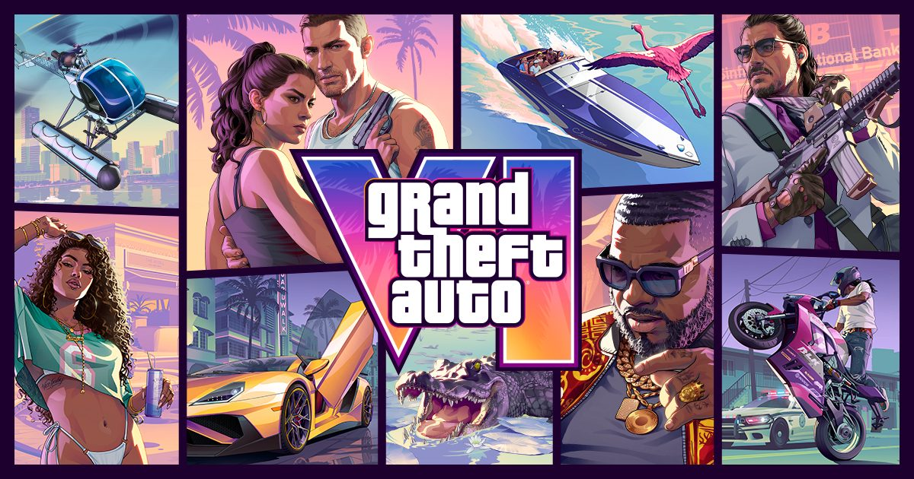

2026-11-17 · 行业深读

北京时间 11 月 18 日凌晨 1 点（美东 17 日中午 12 点），The Game Awards 会把 2026 年全部奖项的入围名单一次性放出来。 按往年惯例，这场由 Geoff Keighley 主持的特别节目只有十分钟左右， 而「年度游戏」的五个候选会压在最后才念。中文圈现在流传的说法是「等名单」， 但名单出来之前，有一件事其实已经确定了： 《侠盗猎车手 6》符合今年的参选资格，而它的媒体评测预计要到发售前一天才解禁。 也就是说，一百多家媒体的编辑，要在没读到任何一篇正式评测的情况下， 决定要不要把这款游戏写进自己那一票里。这不是 GTA 6 的特权，是制度本身留下的缝。
11 月 17 日（美东），提名公布。 11 月 18 日，按 Rockstar 过去十五年的固定节奏（《荒野大镖客 2》《GTA 5》《马克思·佩恩 3》《黑色洛城》全部是发售前一天解禁）， GTA 6 的评测大概率在这一天放出。 11 月 19 日，游戏发售。11 月 20 日 21:00 太平洋时间，TGA 的资格线关闭。
看清楚这个顺序：提名在前，发售在中，资格线在后，评测卡在中间。 TGA 的规则原文写得很干脆——游戏只需在 11 月 20 日 21:00 PT 之前「向消费者商业发售」即可参选， 不需要在提名公布时已经上市。GTA 6 差一天踩线通过，只差一天。 而如果这个截止日往前挪两天（2023 年那一届的资格线恰好就是 11 月 17 日）， 这款今年最大的游戏就要等到 2027 年才能参选。差的不是实力，是日历。
第一层，资格。没有报名表、没有报名费、不需要发行商提交材料。 任何在窗口内商业发售的游戏自动进入候选池。重制版、复刻版、资料片、DLC 也有资格， 只要评审团认定它在创意或技术层面拿出了值得肯定的新东西——这条很重要，下面会用到。
第二层，提名。由一百多家国际游戏媒体与创作者的评审团决定， 每家提交一份保密、无排名的五票名单（每个奖项各五个名字）。 计票后，出现在最多选票上的五个作品成为提名；票数打平，该奖项可能变成六个甚至更多候选。 Keighley 本人不在评审团里，也不投票；顾问委员会同样不参与，他们和公众一样在直播里第一次看到结果。 换句话说，工作室和玩家是同时知道提名的，没有提前通气。
第三层，终投。评委票占 90%，公众票占 10%。 公众投票从名单公布即开放，到 12 月 9 日 18:00 PT 截止——正好是颁奖礼前一天。 中国区玩家通过 Bilibili 投票，这是官方明确列出的通道。 这套比例设计得很聪明：10% 足够让「民意」在票数接近时翻盘，又不足以把奖项变成人气竞赛。
第四层，玩家之声。这是唯一一个 100% 由公众决定的奖，资格线也和主奖项不同： 11 月 30 日前上市即可。于是就出现了一个诡异的空档——11 月 21 日到 11 月 30 日之间发售的游戏， 只能进「玩家之声」，进不了任何一个主奖项。同一个游戏，两套时间表，这在任何颁奖体系里都算罕见。
假设 GTA 6 的评测 18 日解禁，19 日发售，而评审团的投票截止日在提名公布前后。 那么评委能依据的东西只有三样：预告片、试玩片段、以及 Rockstar 过去二十年的口碑记录。 有报道提到，评测副本在提名周期中途才送到部分媒体手中，且附带严格的传播限制—— 这意味着能真正上手的人，是极少数。
这不是第一次。2018 年《荒野大镖客 2》拿下 97 分，在 TGA 上输给了《战神》； 2013 年《GTA 5》同样 97 分，撞上《最后生还者》。Rockstar 的两次「年度游戏」失手， 都发生在口碑爆棚却遇上叙事更「讨评审喜欢」的对手时。 但今年的情况不一样：前两次它至少是被玩过之后才被评判的，这一次可能不是。
站在评审团的位置上想一想，这其实是个两难。 不投它，等于公开宣布「今年最大的游戏不值得讨论」，读者不会买账； 投了它，等于用品牌信用替代了阅读体验，而奖项的公信力恰恰建立在「我们看过」之上。 我倾向于认为大多数媒体会投——不是因为确定它好，而是因为在这个时间点，把它排除在名单外的解释成本更高。 这是评审机制在极端情况下的自然反应，谈不上腐败，但确实是一次压力测试。
今年真正有意思的对手不在 11 月，在 11 月 5 日。 Switch 2 版《塞尔达传说：时之笛》重制 11 月 5 日发售，四天卖出 520 万套，Metacritic 停在 96。 规则允许重制版参选，前提是评委认可其新创作——2023 年《生化危机 4 重制版》就进过年度游戏候选， 算是给这条路做了判例。
于是今年的年度游戏可能变成一道很奇怪的题： 一边是二十八年前那部作品的重制，一边是一部还没被任何人评测过的新作。 前者证明了「经典依然能打」，后者代表了「工业上限」。两者都有资格，两者的资格依据却完全不同—— 一个靠历史，一个靠预期。中间那些真正在 2026 年做出新东西的作品（二月的《生化危机：安魂曲》、 《影之刃零》《Pokopia》这类 88–89 分档的选手）， 反而可能被这两端的声量挤到边上。
还有一个细节值得记一笔：电竞类奖项的提名已经先一步流出—— 最佳选手是 Faker、Chovy、ZywOo、ZmjjKK、Aleksib、33 这份名单， 战队是 BLG、GEN、NAVI、T1、Liquid 并列，电竞项目则是 LoL、Valorant、DOTA2、CS2 与《决胜巅峰》。 这类奖项由专门的小评审组负责，和主奖项不是同一批人，公布节奏也不一样。 顺带说，2025 年那届创下了 1.71 亿次直播观看，《光与影：33 号远征队》拿下 12 项提名—— 这是目前的纪录，今年大概率破不了，因为候选池里没有第二个「十二项」级别的作品。
我们的观察：这套制度最脆弱的地方不是「允许未发售游戏参选」，而是 提名公布日与资格截止日之间的五天。五天里，一款游戏可以从「有资格」变成「有实绩」， 而评审团的投票窗口恰好横跨这五天。制度设计者显然知道这一点——他们专门给玩家之声单独设了 11 月 30 日的窗口， 说明「给还没被玩过的游戏留位置」是被考虑过的。只是主奖项没有做同样的处理。
我们的观点：改法其实不复杂，两条里选一条就够了。 其一，把主奖项的资格线改成「提名公布日前已商业发售」，代价是年末大作自动顺延一年，商业上不可行； 其二，保留现有窗口，但要求评审团在投票时标注「已上手 / 仅看材料」，并在公布名单时一并披露。 第二条不改变结果，只增加透明度，成本几乎为零。一个奖项的可信度，最终取决于它敢不敢承认自己没看过。
我们的案例对比：三届 TGA 的「时点问题」摆在一起看很清楚。 2013 年《GTA 5》九月发售、十二月评奖，评委有三个月；2018 年《荒野大镖客 2》十月发售， 评委有六周；2026 年 GTA 6 十一月十九日发售、十七日提名，评委有负数。 同样一款产品，落在不同的日历上，拿到的评审质量可以差出一整个量级。 对比之下，金摇杆今年把年度游戏给了《生化危机：安魂曲》——二月发售，被玩了大半年。 两个奖给出的答案不一样，某种程度上正是因为它们的日历不一样。
我们的实验：如果让我按规则投一张五票，我会这么排—— 《时之笛》重制（96 分，史上最高分重制，判例支持）、 《生化危机：安魂曲》（二月至今的长线口碑 + 金摇杆背书）、 《Big Walk》（91 分，今年评价最好的新 IP）、 《Forza Horizon 6》（90 分，受众规模是硬指标）、 《Pokopia》（89 分，Switch 2 的装机量放大器）。 GTA 6 我会留空——不是不认可，而是在没读到评测之前，任何一票都是对制度的透支。 等 12 月 10 日颁奖礼那天，如果它真的拿下年度游戏，我希望那时候所有人都已经玩过它了。
我们的评分理由：7.6 分评的是「制度透明度」，不是评游戏。加分项：资格规则、五票无排名机制、 90/10 加权、玩家之声的独立窗口，全部公开可查，且明确说明 Keighley 不投票； 电竞与专门奖项分设评审组，专业度在线。扣分项：主奖项的资格线与提名日存在结构性错位， 且没有任何机制提示「这条提名来自材料而非体验」； 11/21–11/30 的发售空档至今没有解释。 一句话总结：这不是黑箱，是一个所有人都能看见、但没人愿意先动手改的旧日历—— 今年它刚好撞上了一款不该被日历决定命运的游戏。
今晚北京时间 01:00，官方 YouTube 与 Twitch 频道直播，约十分钟，年度游戏压轴。 名单出来后我们会单独写一篇逐项拆解，重点看三件事：GTA 6 进了几个类别、 《时之笛》重制有没有拿到年度游戏提名、以及有没有哪部作品靠玩家之声翻了盘。